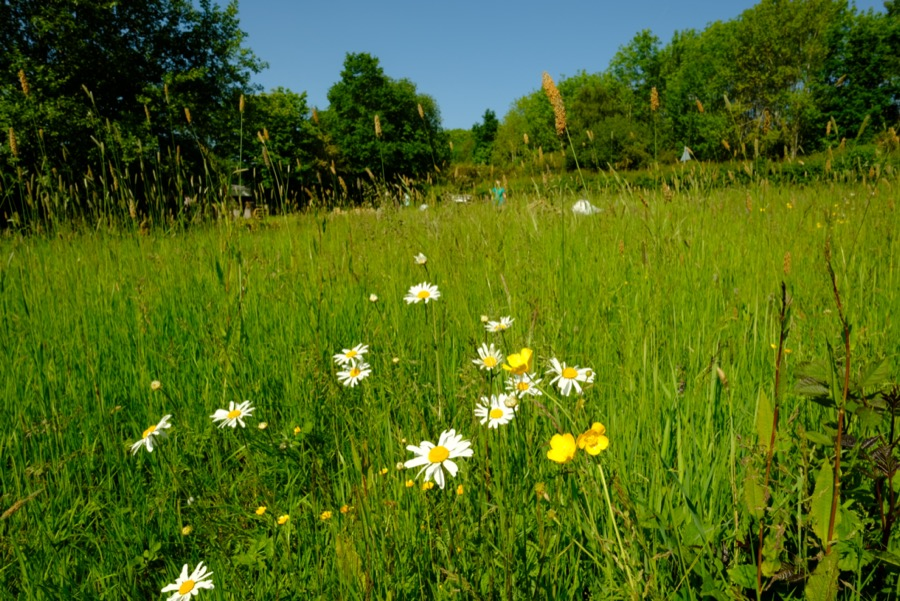
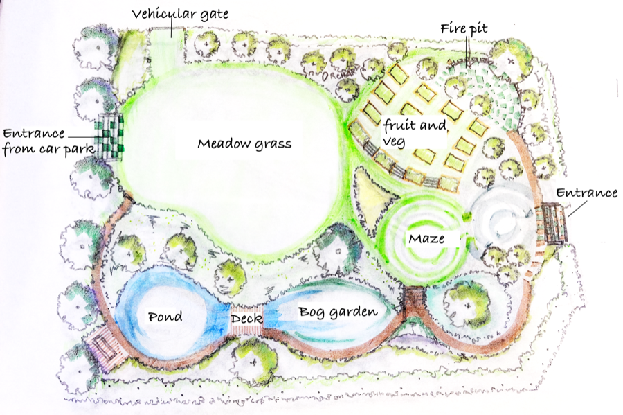

Welcome
Acorn Community Garden, Walton, Chesterfield, is a project to turn a small plot which has been mostly brambles, and sometimes rather soggy, into a beautiful place to discover and encourage nature, and to grow fruit & vegetables as well as have fun and enjoy peace as part of the local community in Walton.
The Project has been running for more than two years.
The project started Spring 2023. The year proved to be very rainy and the frequent deluges have slowed progress but also filled the pond easily.
This spring we have been able to plant trees which were provided by a grant, and they include fruit and nut species, as well as willows for the bank alongside the bog garden and pond.
In the last year we have:
-
Installed land drains and the pond and bog garden, and bank, and the paths, as well as the firepit were defined.
-
Planters were constructed on site by volunteers and installed by one of our local farmers.
-
Composting bins constructed and installed
-
A gate was installed to the car park to make access easier.
-
Much hard work was done digging out and clearing brambles by community volunteers, and hedges were trimmed and overgrowth of weeds cleared.
-
The planned grass meadow was rotavated by lack of a dry period did not allow seeding with the grass meadow seed we had purchased.
-
Spring Daffodil bulbs were planted alongside Walton Back Lane.
We are grateful to everyone who has come and helped and particulary to the two local farmers who have provided their equipment - diggers and rotavators - as well as expertise, and without which we could not have made such good progress.
Below: Simple sketch plan of the garden
